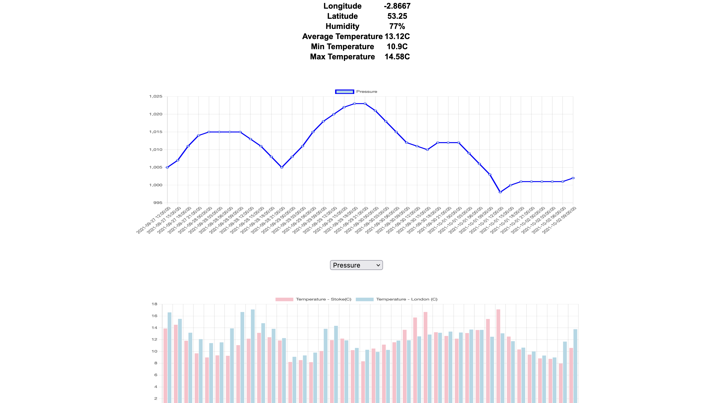

Jack Machin - 21014239
This is my coursework web page for Web Technologies. On this page, there are links to various other pages completed as part of the coursework for this module.
This is my coursework web page for Web Technologies. On this page, there are links to various other pages completed as part of the coursework for this module.
This is a web page created to submit and store publication and school details in a file. The web page "list.php" lists all the stored details and the web page "display.php" displays a single record to the user. These pages are linked together.
This is a CV made from the perspective of someone looking for a web developer role. The CV has the same monochromatic black, white, grey colour scheme and includes skills, langauges, interests, social media, a profile and education.
This is a Web appliation made using HTML, CSS and JavaScript to receive and show the weather conditions in Stoke-On-Trent and London on specific days. The application uses ChartJS and JSON to create 2 different types of graph.
